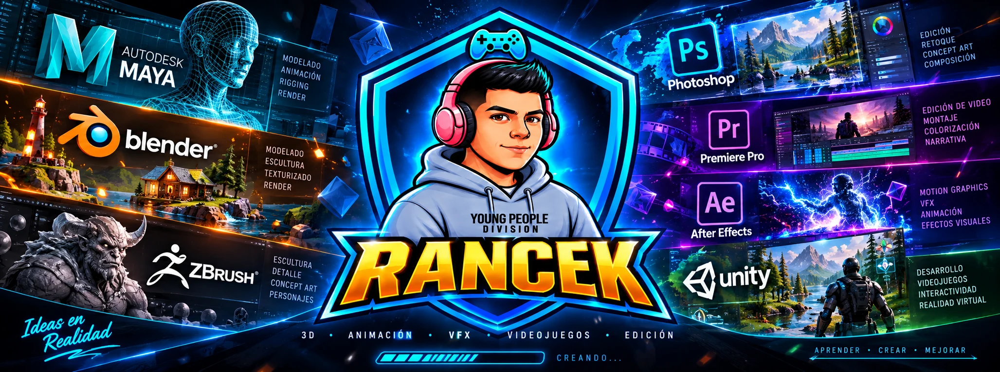
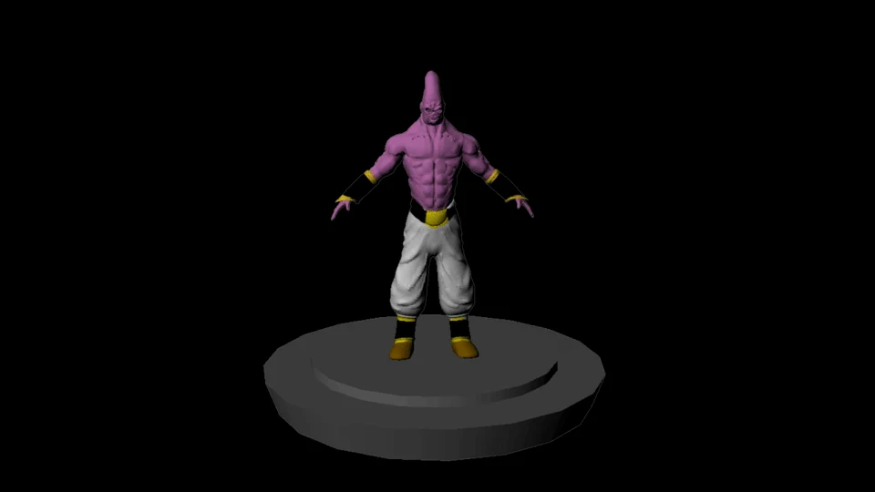
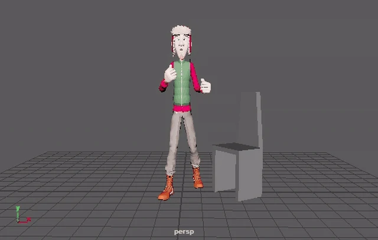
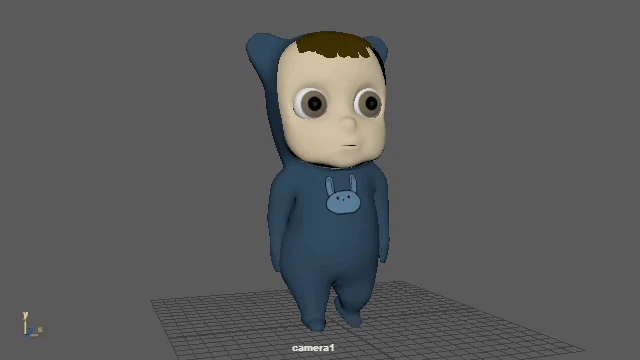
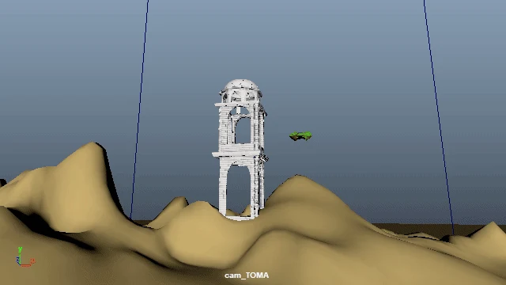
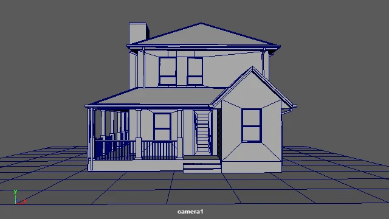
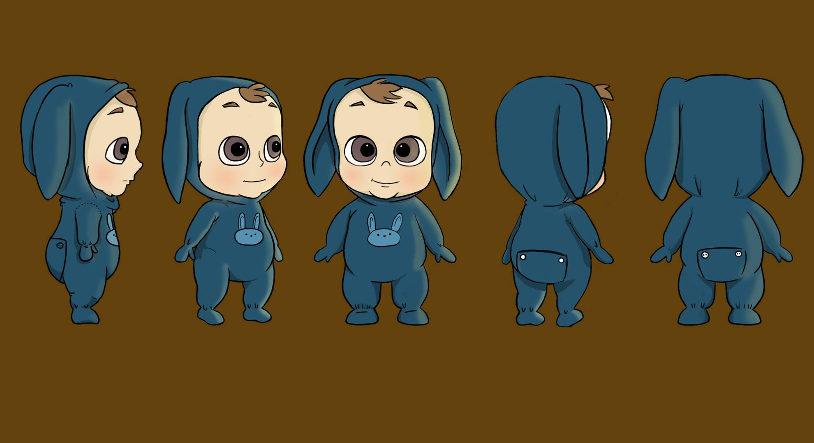

Modelado 3D
De la referencia al volumen. Modelado, escultura, topología, materiales e iluminación.
PORTAFOLIO / ARTE & ANIMACIÓN
ELIAS MEDEL · RANCEKSoy Elias Alejandro Medel Collao, alias Rancek. Exploro el volumen, el movimiento y la expresión a través del arte 3D.
Explorar mi trabajo Ver currículum (PDF)
01 / SOBRE MÍ
Mi nombre es Elias Alejandro Medel Collao. Rancek es mi alias artístico.
Soy un artista enfocado en el 3D, la animación y la creación audiovisual. Mi formación universitaria y mis proyectos personales me han permitido conectar el diseño de personajes con su desarrollo tridimensional y su puesta en movimiento.
Este portafolio reúne ejercicios y proyectos de distintas etapas de mi aprendizaje. Continúo perfeccionando mis conocimientos en modelado, animación y producción audiovisual, y participo como cofundador de Studios Conari SpA.

02 / CREACIÓN COLABORATIVA
Cofundador · Artista 3D
Un estudio creativo chileno que conecta arte, narrativa y tecnología para desarrollar videojuegos, experiencias interactivas y universos originales.
Aporto desde el modelado, la animación de personajes, el Lip Sync y el desarrollo visual, creando recursos 3D para nuestros proyectos.
Conocer el estudio03 / ÁREAS DE ESPECIALIZACIÓN
Del primer boceto
a la imagen en movimiento.
De la referencia al volumen. Modelado, escultura, topología, materiales e iluminación.
Movimiento con intención. Poses, ciclos, timing y actuación de personajes.
Conectar voz y expresión. Fonemas, mirada y lenguaje corporal.
Integrar imágenes y efectos mediante composición y postproducción.
Explorar una identidad visual a través de bocetos, expresiones y rotaciones.
04 / PORTAFOLIO
Una selección de mi exploración
artística y formación universitaria.

Modelado 3D
Estudio de volumen y forma a partir de un diseño de Dragon Ball.
Ejercicio académico basado en un dibujo existente de Dragon Ball. El diseño y el personaje pertenecen a sus respectivos titulares. Mi autoría corresponde al modelado 3D; no reclamo la autoría del diseño original.
Ver proyecto
Lip Sync · Acting
Sincronización labial, expresión facial y actuación en un ejercicio de animación.
Ver proyecto
Animación 3D
Ciclo de caminata: poses, ritmo y peso para dar vida al personaje.
Ver proyecto
Efectos visuales
Ejercicio final de VFX desarrollado durante mi formación universitaria.
Ver proyecto
Modelado 3D
Modelado de una casa: estructuras, proporciones y presentación tridimensional.
Ver proyecto
Estudio de personajeDiseño de personajes
Estudio de rotación de personaje para explorar sus proporciones desde distintas vistas.
Ver proyectoEXPLORA LOS REPOSITORIOS COMPLETOS
05 / SOFTWARE & HERRAMIENTAS
Herramientas que acompañan
cada etapa del proceso creativo.
Modelado y animación 3D
Escultura digital
Texturizado y materiales
Dibujo, diseño y edición
VFX y composición
Edición audiovisual
06 / CONTACTO
Conoce mi trabajo y mis proyectos en GitHub,
o visita Studios Conari para conectar con el estudio.